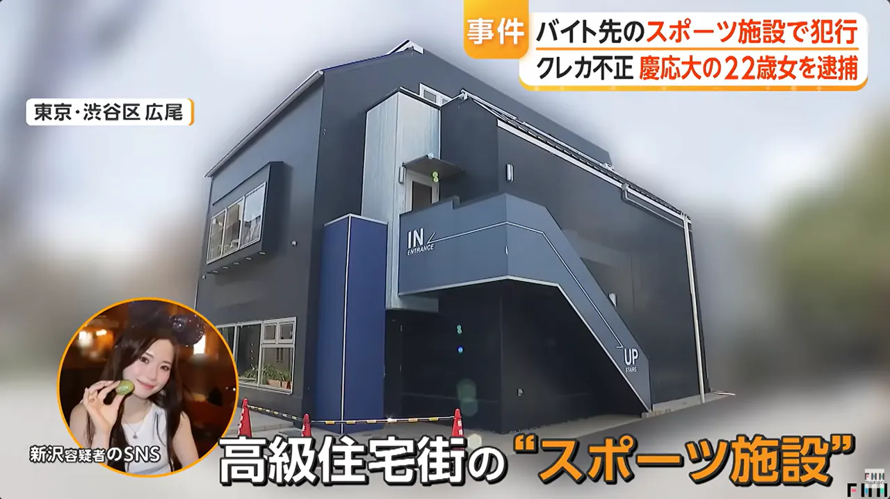
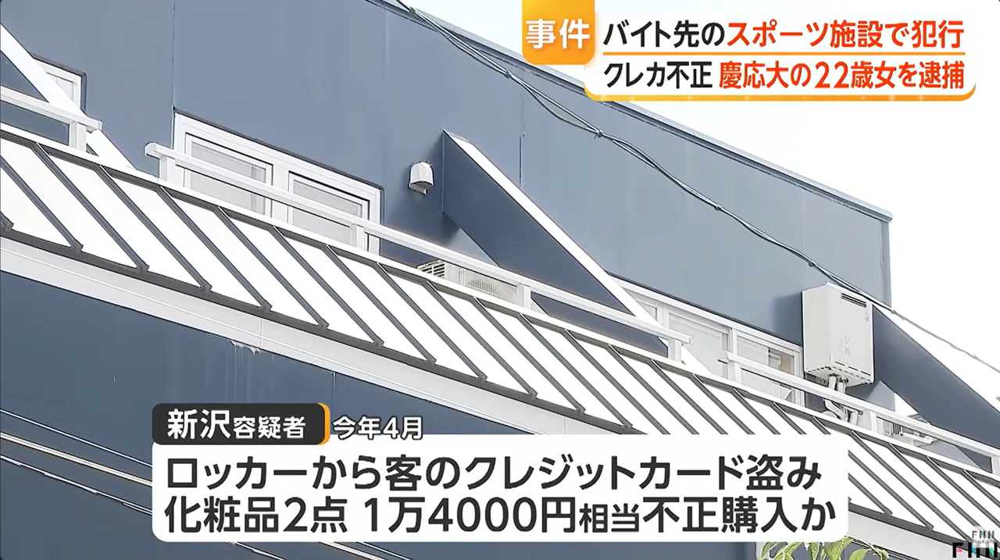
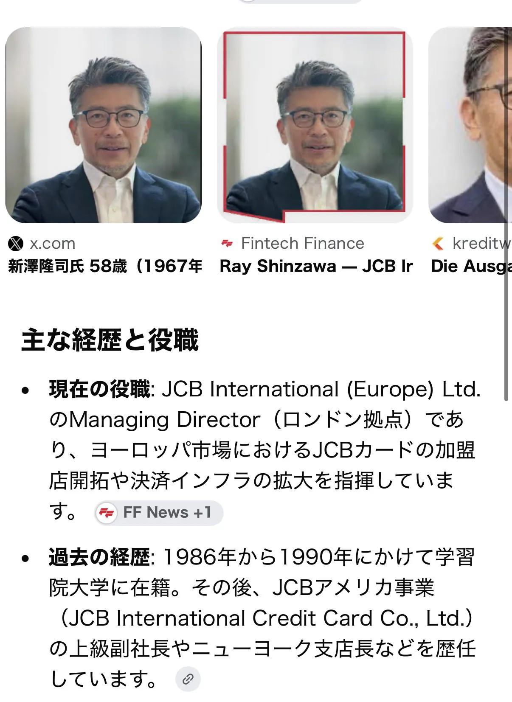

얼마전 신용카드를 절도해서 무단으로 사용한 혐의로 체포된 게이오대학 4학년 여대생 신자와 카렌(22살)

고급주택단지에 위치한 스포츠시설
신자와 카렌은 여기서 알바를 하며 학업을 병행했다고 함

하지만 그녀는 본인이 이 시설 직원으로 일하고 있는 점을 악용해 고객의 락커를 풀고
신용카드를 훔쳐서 화장품 2점을 구매에 사용해버림
사용금액은 14000엔
게이오대학 출신 여대생이 왜 이런 절도를 저질렀을까 하는 의문점이 있는 사건
그러던중 그녀의 아버지의 신상까지 털렸는데

그녀의 아버지가 몸을 담고 있는 JCB
현 JCB인터내셔널 유럽사업
유럽총괄 책임자 및 매니징 디렉터
전 JCB인터내셔널 미국사업
사장 겸 최고집행책임자, 북미・중남미 총괄책임자
참고로 JCB는 비자, 마스터, 아메리카 익스프레스와 같은 일본의 국제 결제 브랜드이자 신용카드회사
JCB해외법인 최고경영자 아버지를 두고있었음...
그 외에도 털린 신상들에 의하면
해당 용의자는
미국 뉴욕 출생
캘리포니아 주의 고등학교 졸업
일본으로 귀국해 게이오기주쿠대학 입학
대형금융회사에 내정
미쓰비시UFJ모건스탠리증권으로 추정
등등
댓글
수집 당시 댓글 2개
decoy · 18 시간 전
도벽임 보통
아이언호크 · 1 시간 전
안타깝다